现存全部 10 段视频：完整实测结果
识别流程能执行完成；结果可用性需要看原始覆盖，不能只看平滑后的完整曲线。执行完成 4 段，整段拒读 6 段；共 1413 个采样点，原始有效 655，推断 29。每 2 帧取 1 帧，第四轮 C DLL、方案 A、双份 SQLite 落盘均复用当前正式代码。全流程合计 94.80s，含抽帧/读图/模型/保存，不含界面刷新。
橙色浅带标出原始拒读时间。补齐后的点属于推断，曲线完整不代表逐帧识别成功；本次没有人工角度真值，不能给出精度合格结论。全部拒读的视频没有生成假角度。
标准 Excel 结果 · 全部视频汇总 CSV · 美化逐点 CSV · 原始/美化完整 JSON · 复现和证据
产生曲线的 4 段原始有效比例为 90.9%–98.9%；最长补齐区间的邻接跨度为 0.766s。本次编号按实际现存文件排序，与上一份“最近五条”报告编号不同；完整文件名见每段详情。
V01 · 10-14 14:28:26 整段拒读；当前模型下不可用
CAM-41eda5f2c5b00de1-v3-1791959298102482-2773095793.mp4
原始有效 0/126（0.0%） · 拒读 126 · 推断 0 · 美化后有效 0 · 最大绝对值 —
最长连续拒读 126 点；最长拒读区间跨度（含邻接时点）8.867s。耗时 7.39s。
原因：亮度或画面发生变化 ×126
程序状态：failed；Bad state: 本段录像没有有效读数，请查看拍摄详情
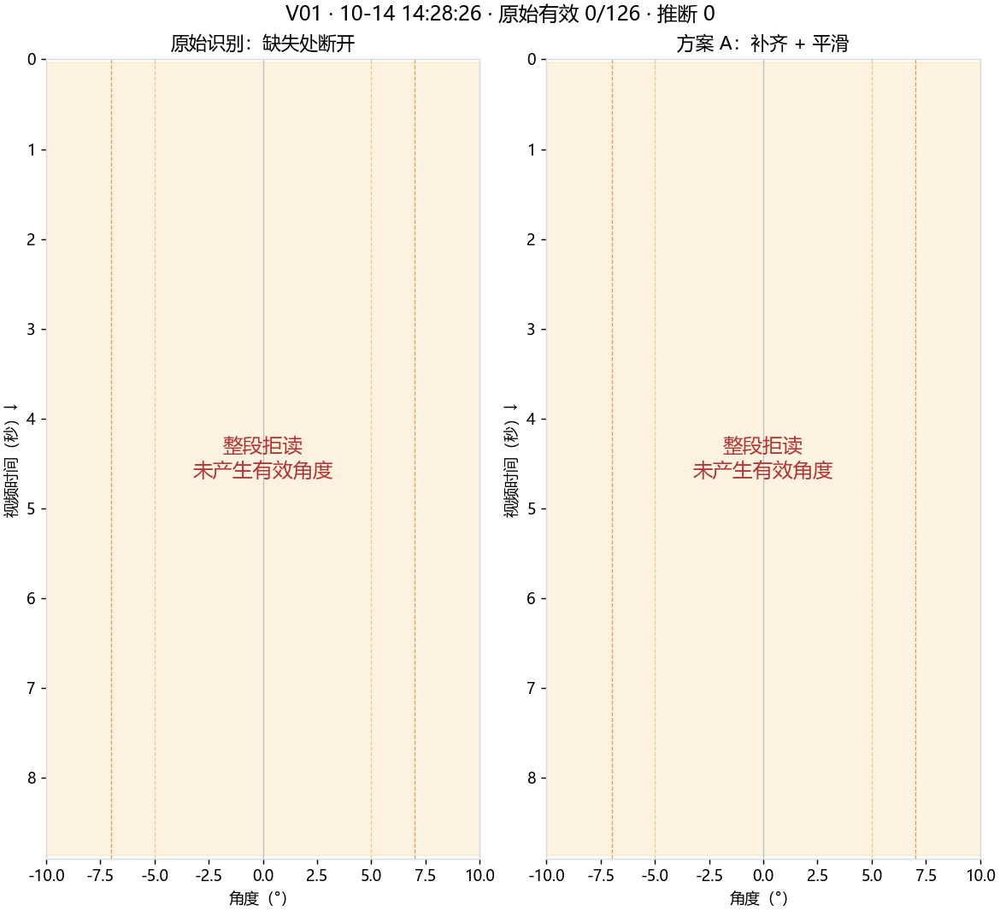
查看原视频及三个时点的画面
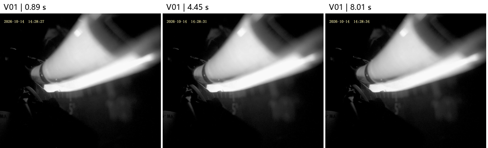
V02 · 10-14 14:29:21 整段拒读；当前模型下不可用
CAM-41eda5f2c5b00de1-v3-1791959316003053-2512671705.mp4
原始有效 0/170（0.0%） · 拒读 170 · 推断 0 · 美化后有效 0 · 最大绝对值 —
最长连续拒读 170 点；最长拒读区间跨度（含邻接时点）11.917s。耗时 9.91s。
原因：亮度或画面发生变化 ×170
程序状态：failed；Bad state: 本段录像没有有效读数，请查看拍摄详情
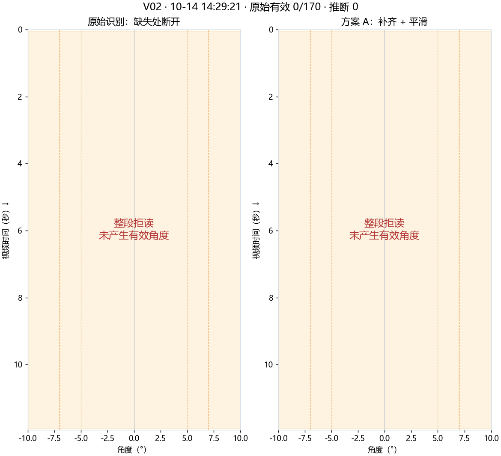
查看原视频及三个时点的画面
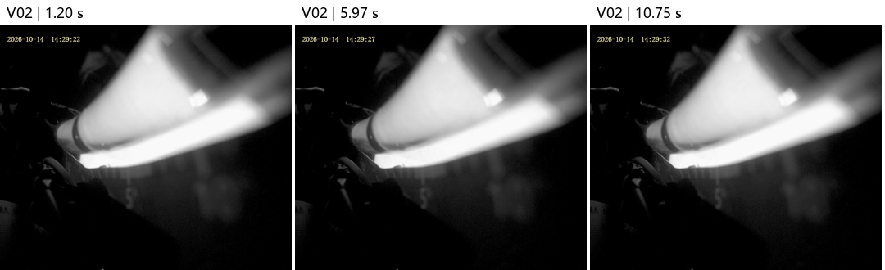
V03 · 10-14 14:30:37 整段拒读；当前模型下不可用
CAM-41eda5f2c5b00de1-v3-1791959373642369-3273093350.mp4
原始有效 0/129（0.0%） · 拒读 129 · 推断 0 · 美化后有效 0 · 最大绝对值 —
最长连续拒读 129 点；最长拒读区间跨度（含邻接时点）8.967s。耗时 7.07s。
原因：亮度或画面发生变化 ×129
程序状态：failed；Bad state: 本段录像没有有效读数，请查看拍摄详情
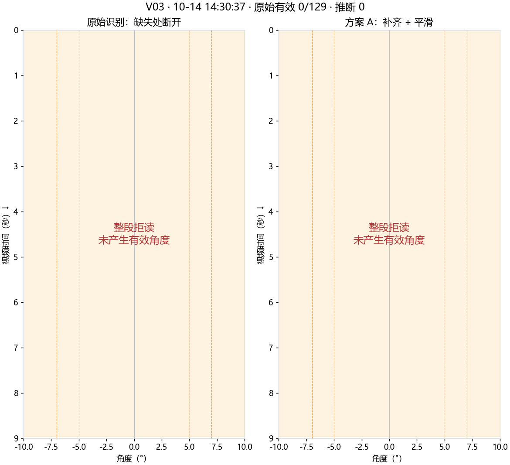
查看原视频及三个时点的画面
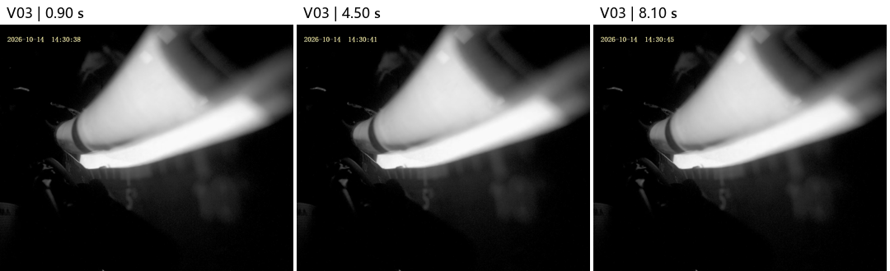
V04 · 10-14 14:31:04 整段拒读；当前模型下不可用
CAM-41eda5f2c5b00de1-v3-1791959446553397-1000842064.mp4
原始有效 0/154（0.0%） · 拒读 154 · 推断 0 · 美化后有效 0 · 最大绝对值 —
最长连续拒读 154 点；最长拒读区间跨度（含邻接时点）10.683s。耗时 8.93s。
原因：亮度或画面发生变化 ×154
程序状态：failed；Bad state: 本段录像没有有效读数，请查看拍摄详情
查看原视频及三个时点的画面
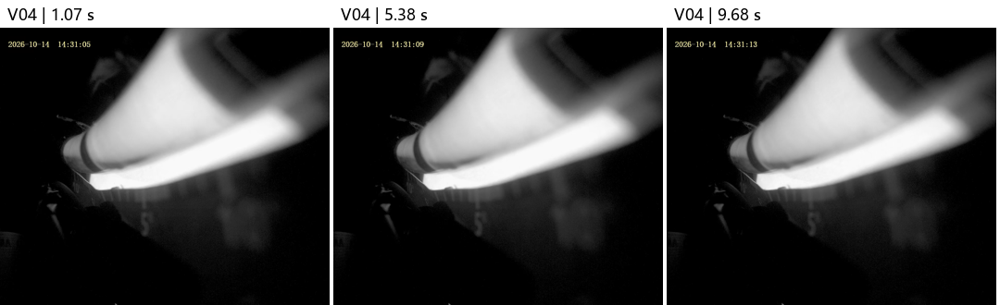
V05 · 10-16 10:42:06 流程完成；含推断，需结合原画面复核
CAM-211ec7045815bf02-v3-1792118519994652-3218650117.mp4
原始有效 179/187（95.7%） · 拒读 8 · 推断 8 · 美化后有效 187 · 最大绝对值 7.63°
最长连续拒读 7 点；最长拒读区间跨度（含邻接时点）0.567s。耗时 13.58s。
原因：左侧相似参考角度不一致 ×8
程序状态：done；含推断值，请复核
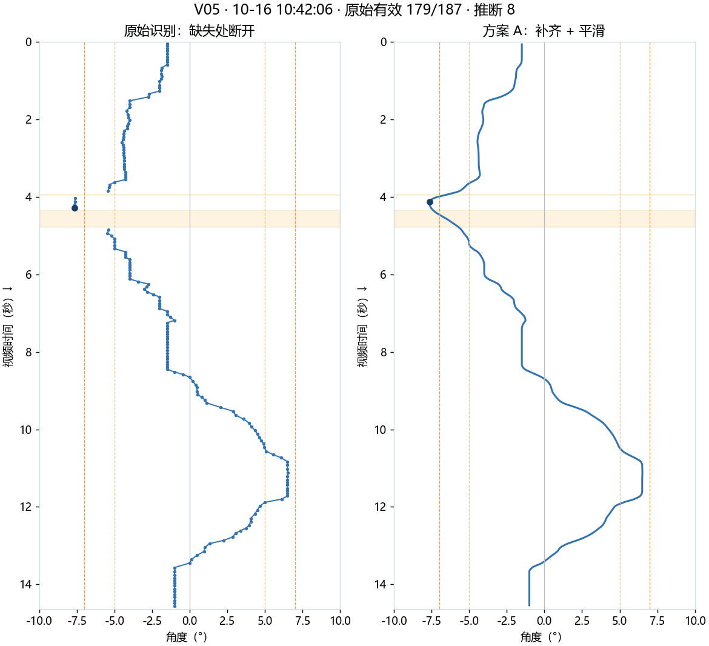
查看原视频及三个时点的画面
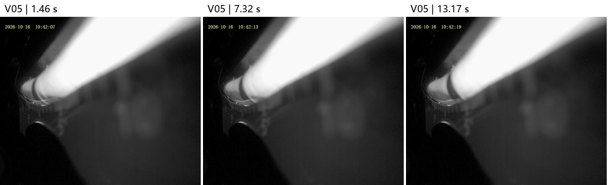
V06 · 10-16 10:42:39 流程完成；含推断，需结合原画面复核
CAM-211ec7045815bf02-v3-1792118541043274-3808826473.mp4
原始有效 185/187（98.9%） · 拒读 2 · 推断 2 · 美化后有效 187 · 最大绝对值 8.63°
最长连续拒读 1 点；最长拒读区间跨度（含邻接时点）0.133s。耗时 13.58s。
原因：左侧相似参考角度不一致 ×2
程序状态：done；含推断值，请复核
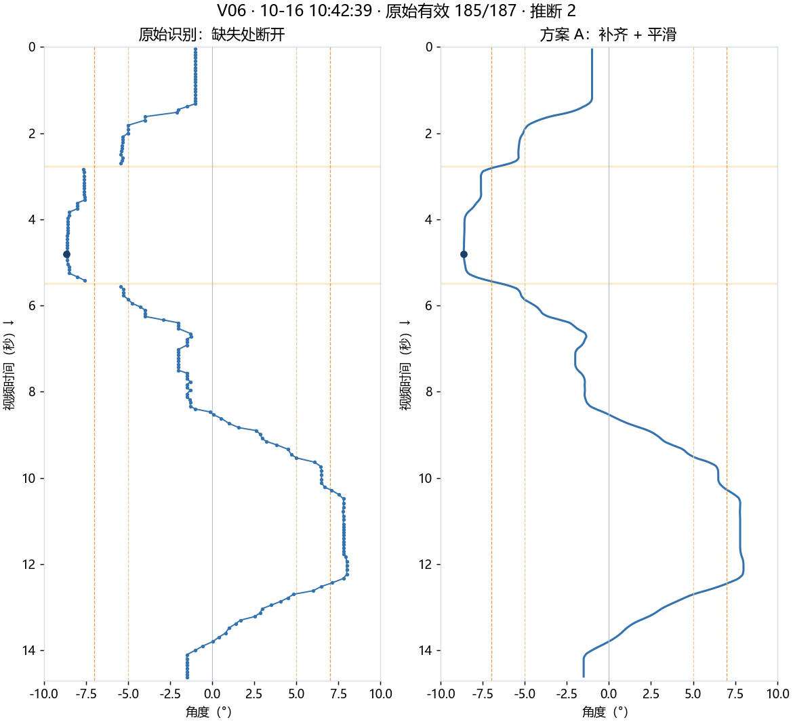
查看原视频及三个时点的画面
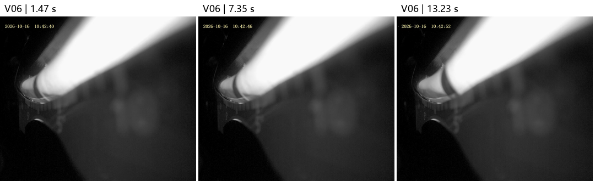
V07 · 10-16 10:43:04 流程完成；含推断，需结合原画面复核
CAM-211ec7045815bf02-v3-1792118574178786-1653672749.mp4
原始有效 161/167（96.4%） · 拒读 6 · 推断 6 · 美化后有效 167 · 最大绝对值 8.79°
最长连续拒读 5 点；最长拒读区间跨度（含邻接时点）0.483s。耗时 12.35s。
原因：左侧相似参考角度不一致 ×6
程序状态：done；含推断值，请复核
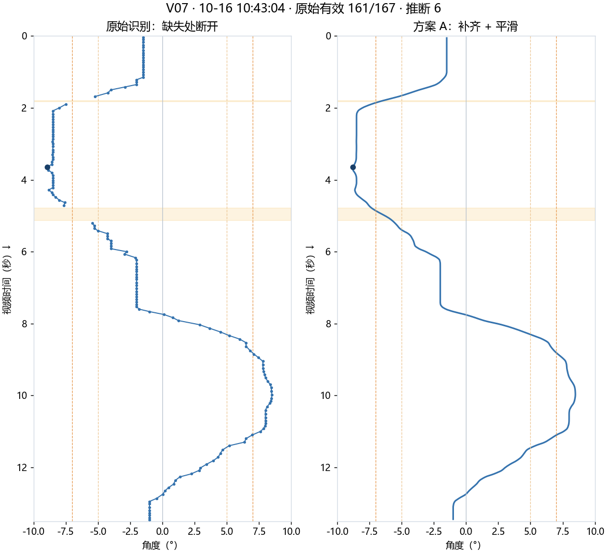
查看原视频及三个时点的画面
V08 · 10-16 10:43:25 流程完成；含推断，需结合原画面复核
CAM-211ec7045815bf02-v3-1792118597868476-1794554868.mp4
原始有效 130/143（90.9%） · 拒读 13 · 推断 13 · 美化后有效 143 · 最大绝对值 8.98°
最长连续拒读 10 点；最长拒读区间跨度（含邻接时点）0.766s。耗时 10.83s。
原因：左侧相似参考角度不一致 ×13
程序状态：done；含推断值，请复核
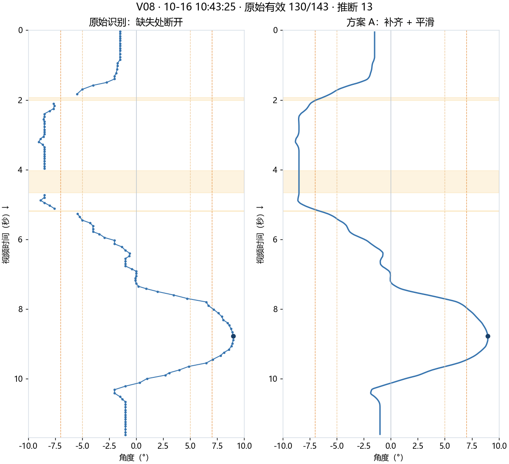
查看原视频及三个时点的画面
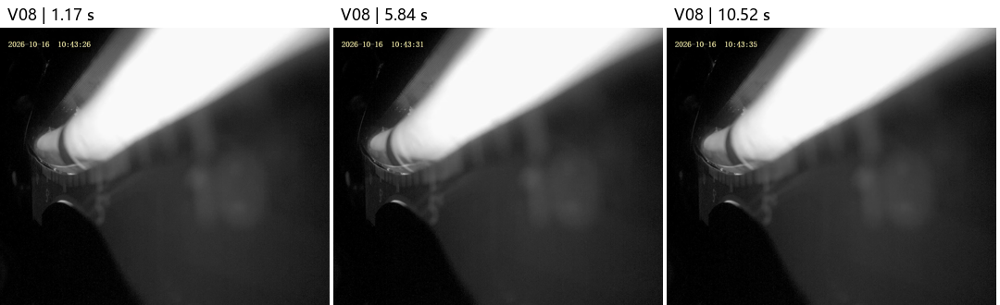
V09 · 10-16 17:17:10 整段拒读；当前模型下不可用
CAM-211ec7045815bf02-v3-1792142219183933-1521334818.mp4
原始有效 0/68（0.0%） · 拒读 68 · 推断 0 · 美化后有效 0 · 最大绝对值 —
最长连续拒读 68 点；最长拒读区间跨度（含邻接时点）5.517s。耗时 5.21s。
原因：超出右侧标定范围 ×68
程序状态：failed；Bad state: 本段录像没有有效读数，请查看拍摄详情
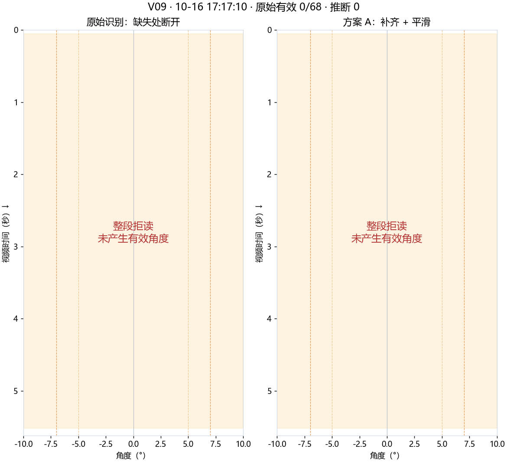
查看原视频及三个时点的画面
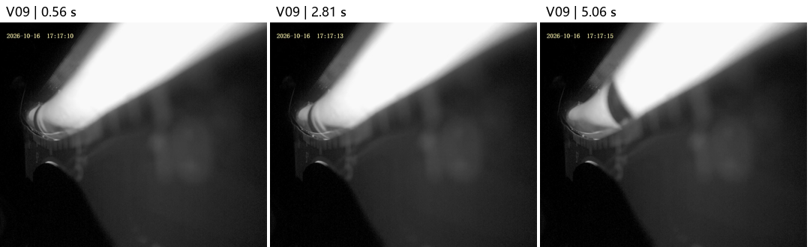
V10 · 10-16 17:17:40 整段拒读；当前模型下不可用
CAM-211ec7045815bf02-v3-1792142236148426-2524623847.mp4
原始有效 0/82（0.0%） · 拒读 82 · 推断 0 · 美化后有效 0 · 最大绝对值 —
最长连续拒读 82 点；最长拒读区间跨度（含邻接时点）6.617s。耗时 5.96s。
原因：超出右侧标定范围 ×82
程序状态：failed；Bad state: 本段录像没有有效读数，请查看拍摄详情
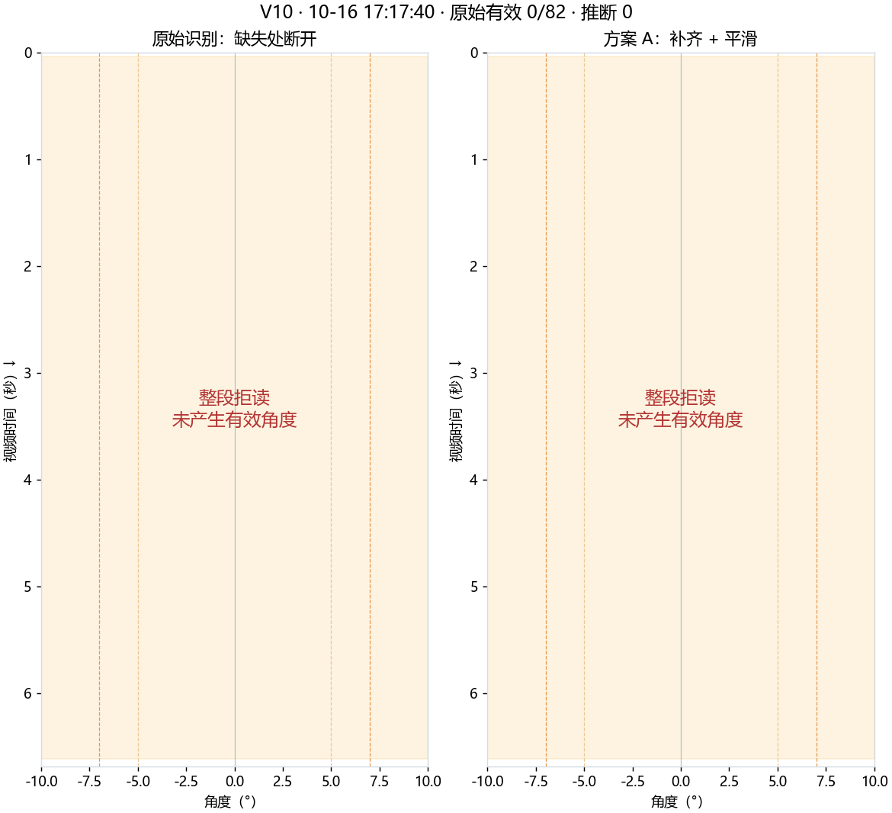
查看原视频及三个时点的画面
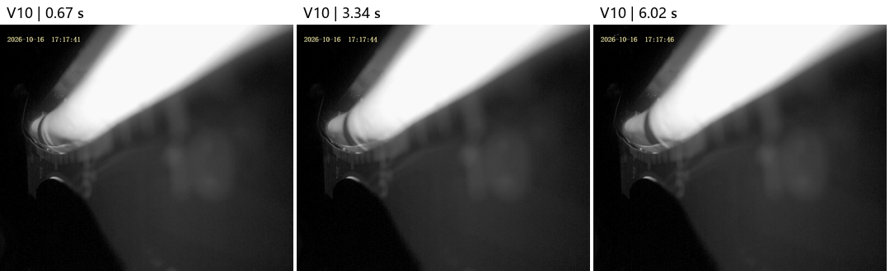
数据库中另有原文件缺失的录像
这些记录不属于现存文件测试，不能把已保存的历史数据当作本次重测结果。
- CAM-211ec7045815bf02-v3-1792138919176410-3802010140 · 10-16 16:22:08 · 原文件不存在，未重测
- CAM-211ec7045815bf02-v3-1792138955371683-418537377 · 10-16 16:22:39 · 原文件不存在，未重测
- CAM-211ec7045815bf02-v3-1792139498954428-2117054735 · 10-16 16:31:50 · 原文件不存在，未重测
- CAM-211ec7045815bf02-v3-1792139518185701-3890505040 · 10-16 16:33:02 · 原文件不存在，未重测
- CAM-211ec7045815bf02-v3-1792139590408757-3531452624 · 10-16 16:39:50 · 原文件不存在，未重测
- CAM-211ec7045815bf02-v3-1792139998924000-2142595549 · 10-16 16:40:13 · 原文件不存在，未重测
- CAM-211ec7045815bf02-v3-1792140970488966-1123874023 · 10-16 16:56:15 · 原文件不存在，未重测
- CAM-211ec7045815bf02-v3-1792140982127764-963174005 · 10-16 16:57:13 · 原文件不存在，未重测
- CAM-211ec7045815bf02-v3-1792142533511726-1809974981 · 10-16 17:22:16 · 原文件不存在，未重测
- CAM-211ec7045815bf02-v3-1792142542290245-1732950715 · 10-16 17:22:41 · 原文件不存在，未重测